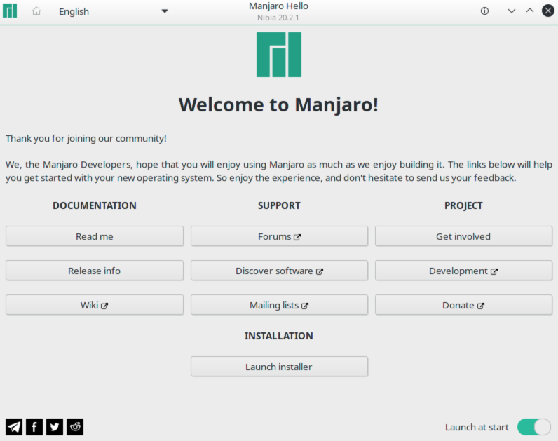
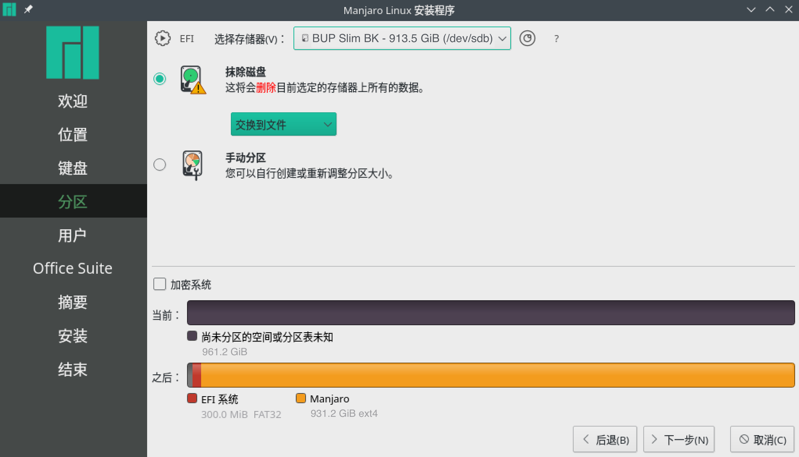

把Manjaro安装到Macbook Pro的外置硬盘
文章目录
前言
在开始行动之前，请使用Time Machine备份系统，以免出现数据丢失，导致不可挽回的局面。
随着电脑的使用，软件越装越多，感觉越来越卡，在Mac上也不能例外。于是我就萌生来在Mac上装Linux的想法，毕竟Mac的配置跑Linux完全没有问题。
可是我又不想把 macOS 给删除，毕竟还能用。有一种方案是通过 Boot Camp 来进行分区，但是我电脑上的硬盘空间已经非常少了，连装Xcode都需要把旧的删掉，然后删一些文件才能装上，所以这条路不通。
于是我就想在外置硬盘上安装，毕竟我曾经在一台电脑上装过黑苹果，Windows还有Linux。
有了这个想法后，我就开始搜相关的教程，发现没有十分满意的，于是我就按我自己的想法开始折腾了，还成功了，便有了此文。希望对有同样需求的人能够有帮助。
需要准备的材料
- Macbook Pro一台(我这里是Macbook Pro 2015)
- U盘一个，需要8G及以上的空间
- 外置硬盘或者移动硬盘，最好是固态
刻录镜像
刻录镜像之前，我们需要对U盘进行格式化，这里用到的工具是 SD Card Formatter，可以在 SD Memory Card Formatter官网下载到。
下载完成后安装好软件，然后打开，选择你的U盘，点击格式化就行了。
U盘格式化好后，在Manjaro官网中下载镜像，通过如下命令进行刻录镜像。刻录的时间很长，需要好几个小时，耐心等待一下
|
|
- 其中
if是输入文件，也就是我们的镜像所在的路径，需要替换成你本地的下载路径 of是我们的U盘，可以通过diskutil list来查看 U盘所在路径，一次不插入U盘，然后看插入U盘的，多出来的就是U盘的路径。
安装
先把电脑关机，让后按下 option (alt)键，出现两个启动选项一个是Mactonish，另一个是 EFI Boot，选择EFI Boot回车后启动
来到如下界面，回车进入安装桌面

点击中间的 Launch installer 然后一路下一步, 中间的选项可以根据自己的需要做适当的调整，直到来到分区界面，如下所示

在分区界面要注意的是在选择存储器中一定要选择你的外置硬盘，可别选错了。
在接下来就是进行磁盘分区了，如果你是高手那么按照自己的要求来分就行来，如果不是很熟练就使用默认的就行了。然后一路下一步，输入一些用户名和密码之类的。
然后点击安装，等待安装好，这一步稍微快一些，需要半个小时左右。安装完成后关机，拔掉U盘。
然后按下 option (alt)键，还是出现两个启动选项一个是Mactonish，另一个是 EFI Boot，这个EFI Boot就是移动硬盘上的了，选择EFI Boot回车后启动，就能进入到 Manjaro 了。
总结
在 Mac 上装上了 Linux 现在想用哪个就用哪个，对于性能要求比较高的，我会切换到外置硬盘上，一般使用我就会在虚拟机上使用了。
参考
Installing Ubuntu on an external SSD drive on a Macbook – Floris van Breugel